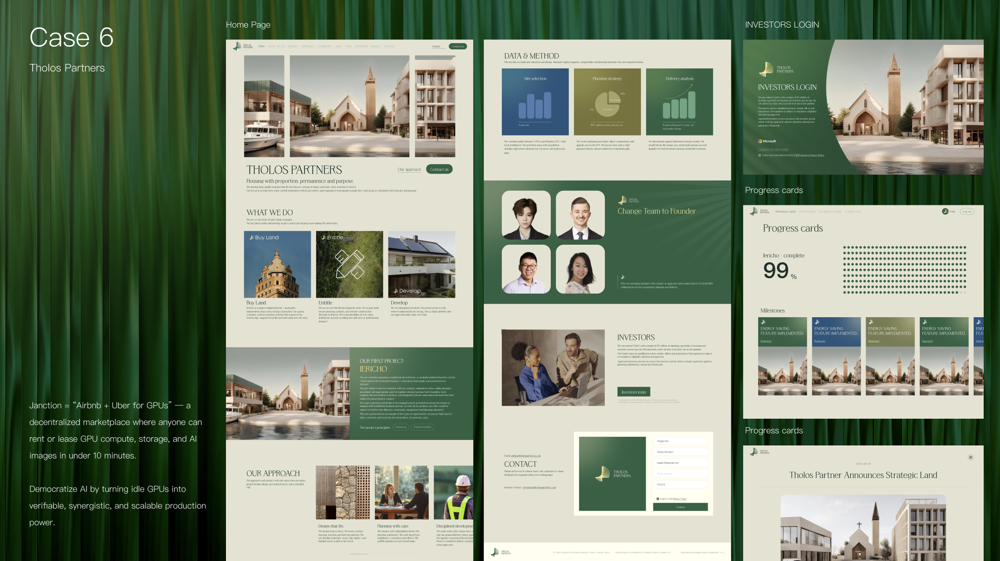
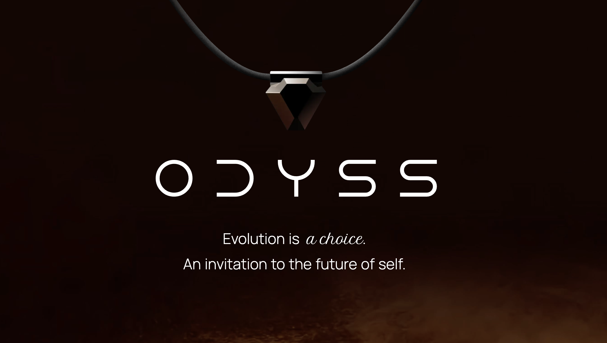
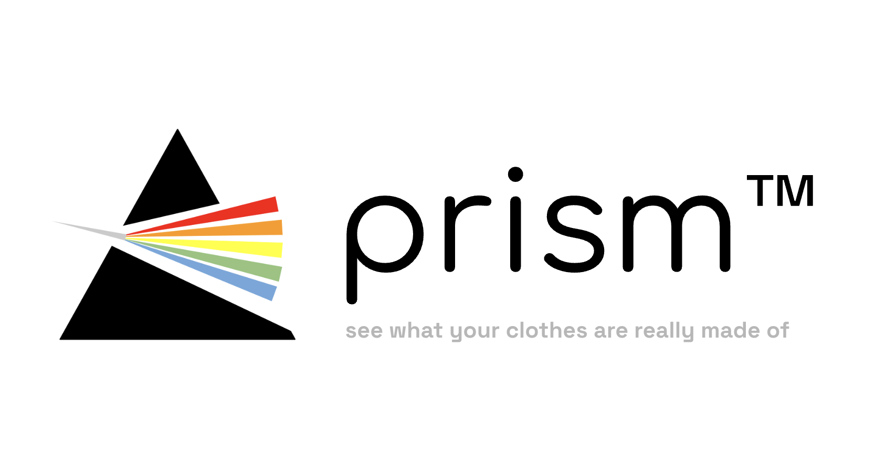
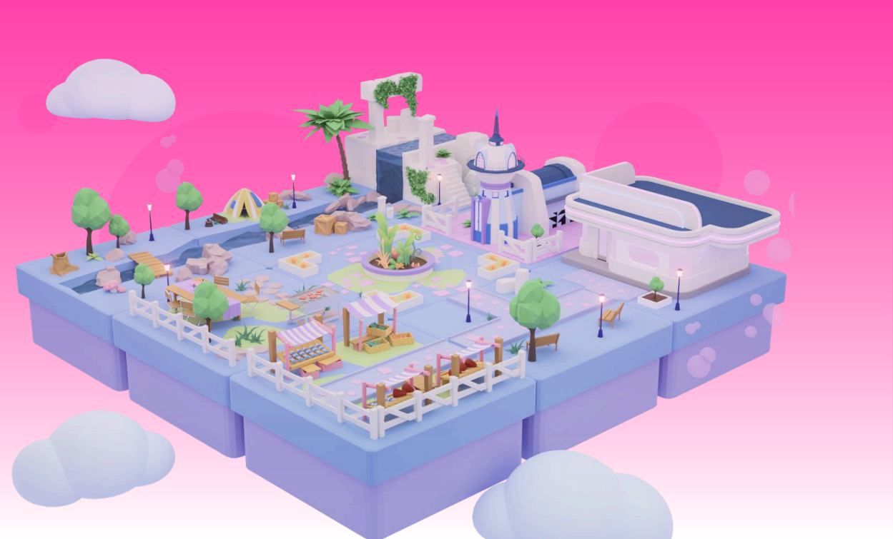
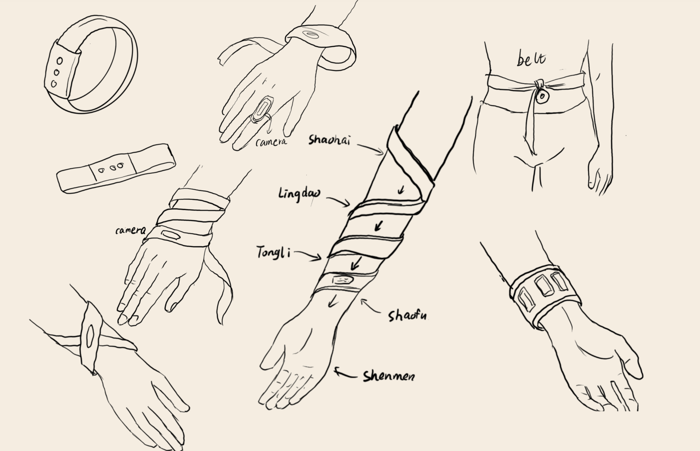
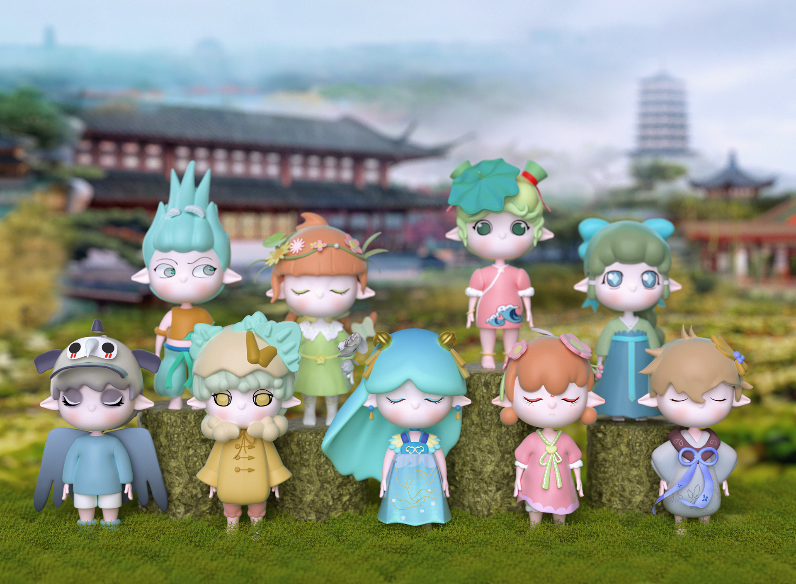
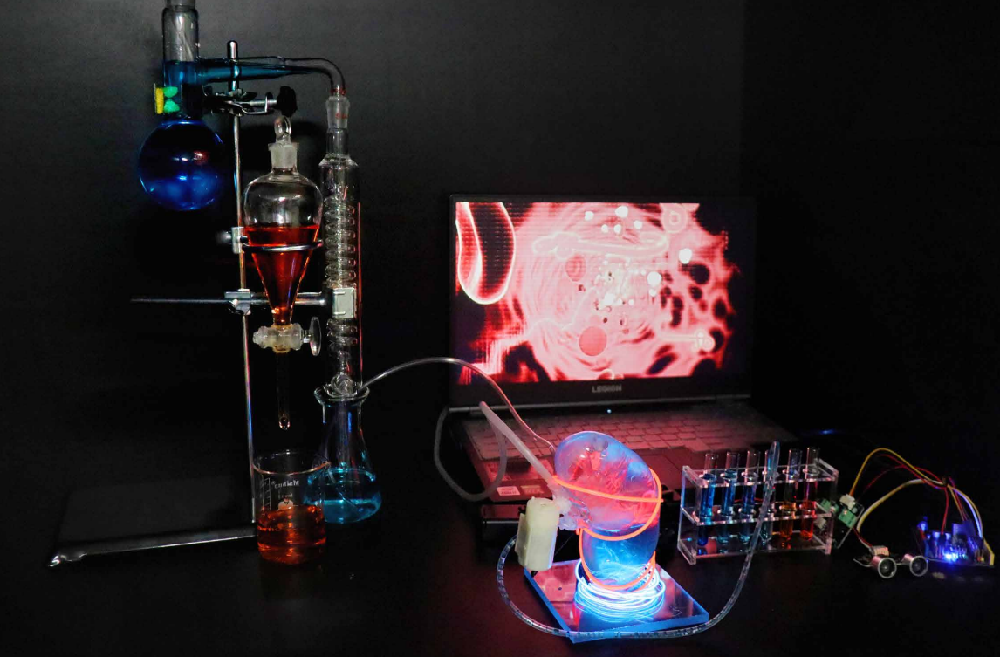
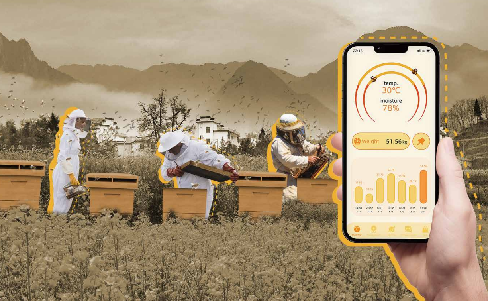
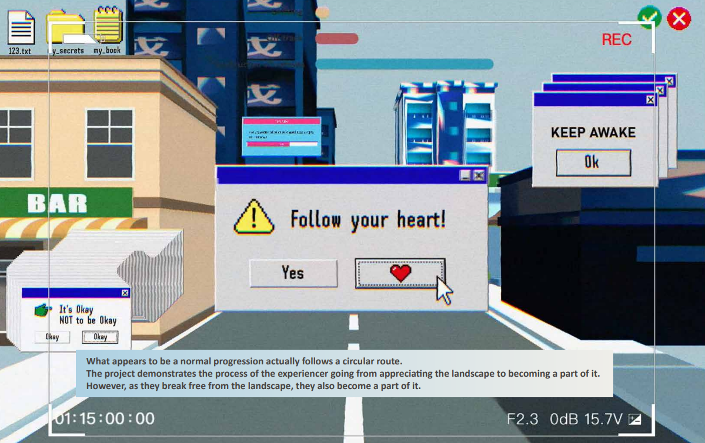

Computational & Interaction Designer
More →

WAhA Design Lab
Designed and built an investor-facing website for Tholos Partners, translating a complex real estate private equity strategy into clear messaging, structured navigation, and a polished brand presence.
tholospartners.com →
WAhA Design Lab
A storytelling-first product launch site with a polished early-access registration flow.
odyss.life →
A pocket-size NIR scanner + app that reveals a garment's true fiber composition in seconds, helping allergy-sensitive and sustainability-minded shoppers make informed choices.
Read More →
A VR game that visualizes emotions to improve communication between young adults and their traditionally authoritative parents in Chinese society, using technology to enhance empathy and strengthen family connections.
Read More →
A tactile wearable that turns spatial cues into structured vibration patterns along the body, exploring touch-first navigation for blind and low-vision users.
Read More →
A collectible blind box series that transforms nature-inspired spirits into soft-form characters through traditional garment aesthetics and calm, poetic expressions.
Read More →
A speculative future where sewage purification requires interaction between machines and the human body, with kidneys as the main filtering mechanism, exploring new social rules and biological interfaces.
Read More →
A smart app and modular hive system that monitors conditions, analyzes data, and provides real-time insights to boost beekeeping efficiency and drive the industry toward intelligence.
Read More →
An exploration of how contemporary societal control through cultural hegemony and landscape manipulation distorts perceptions, making people passive consumers disconnected from genuine experiences.
Read More →A dual-service system for airports and stations offering instant luggage deposit near facilities and long-term storage centers, integrated with self-service machines and mobile apps.
Read More →